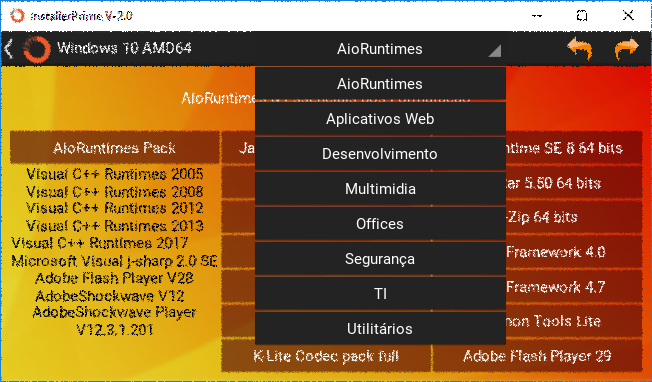
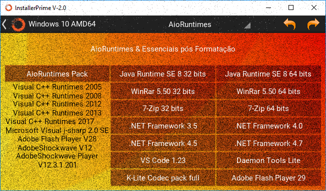
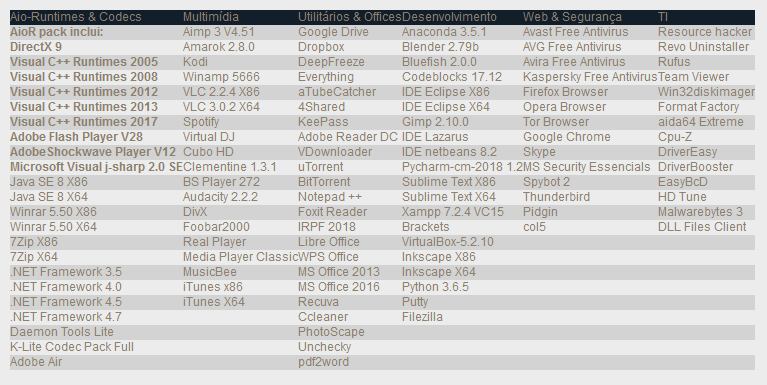

Prime é uma suíte completa, composta por mais de 90 programas das mais diversas categorias, instalável em pendrives, HD's externos ou no próprio computador. Portável, é ideal para técnicos, desenvolvedores e também para usuários menos avançados.
APENAS a versão beta está disponível para download no Google Drive neste momento.
InstallerPrime é uma Suíte nova, em todos os sentidos, seja ele conceitos, design ou funcionalidades. É um projeto de ferramenta simples e útil, disponível para a comunidade sem nenhum custo, para todos aqueles que desejam usar, testar e ajudar a melhora-lo de várias maneiras.
O foco principal, são as pessoas que fazem manutenção de software e hardware constantemente e precisam manter inumeros programas de diversos desenvolvedores atualizados constantemente, ou ainda para aqueles que precisam instalar ou reparar programas estando off-line, sem nenhum tipo de conexão com a internet, com o Prime apenas um download e uma instalação você passa a ter disponível uma vasta gama de programas, separados por categorias.
Temos certeza que, mesmo sendo simples neste estágio de desenvolvimento, o PRIME já tem potencial para ser uma ferramenta muito útil, seu código é código escrito em Python e Kivy e foi carregado com os melhores e mais bem-conceituados programas e ferramentas disponíveis por diversas empresas e desenvolvedores. Melhorias e novas funcionalidades estão previstas para novas versões.
É importante frisar, e isto está visível em várias partes do site, tudo é muito novo, tudo está em desenvolvimento e passando por etapas de ajustes, correções e melhorias, por isso seu Feedback é muito importante para a evolução do PRIME, sempre que possível for, as sugestões serão avaliadas e consideradas.
Apesar de ser um GIGANTE com seus quase 6 GB, o PRIME pode ser instalado em qualquer dispositivo de armazenamento**, seja ele um SDcard, um pendrive, um HD externo ou ainda, em seu pc ou servidor, a partir do windows. Muito útil para técnicos que precisam levar um conjunto de programas e ferramentas para atender seus clientes a domicilio.
O prime é leve e roda bem mesmo em máquinas mais modestas, mesmo a partir de um disco removível,voçê será capaz de trabalhar tranquilamente.
** O Dispositivo de armazenamento precisa conter ao menos 6 GB livres, é recomendável 8GB's.
Recheado de opções!Seus programas favoritos estão todos aqui!
Focado em disponibilizar os melhores programas, das mais diversas categorias, conta com mais de 90 programas* usados no dia a dia, além de ferramentas para desenvolvimento, manutenção, controle e reparo de hardware e software.
* Alguns programas podem requerer acesso a internet para instalação e eventuais downloads adicionais, instaladores offline serão adicionados em breve (quando disponíveis).
Funções Extras
Além da grande gama de programas, alguns botões, menus e informações do sistema podem ser úteis e ajuda-lo durante o uso do programa.
MENU DROPDOWN

Setas NEXT e PREV

INFORMAÇÕES BÁSICAS DO SISTEMA
Preço
Prime é gratuito para uso pessoal e empresarial, não pode e não deve ser vendido. Seja paciente, desenvolver e manter um software gratuíto traz consigo muitos beneficios para a comunidade, mas também algumas limitaçoes, tenha isso em mente ao formar opniões!.
Assim como voçê é livre para usar, tambem é livre para contribuir e ajudar o projeto PRIME a se manter vivo, seja reportando bugs e problemas, ou ainda enviando sugestões.
Depois de testar e avaliar o Prime, se desejar contribua com o projeto, o botão abaixo é seguro e irá redireciona-lo ao pagseguro.
Programas presentes nesta versão

Entre em contato!
Abaixo listamos algumas opcões de contatos, voçê pode faze-lo quando achar importante
Seu feedback é o que nos ajudará a evoluir, melhorar e concertar os erros que não encotramos sozinhos.